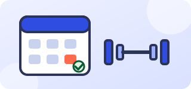

ИИ-помощники: фитнес и красота
Запись, переносы и напоминания отнимают время администратора, а клиенты хотят быстрых ответов.

Что можно автоматизировать
- Запись, переносы и отмены
- Напоминания о визите
- Ответы о ценах и мастерах
Типичная ситуация
Студия, где администратор весь день в переписке.
Как это выглядит на практике
Клиент просит перенести запись. Ассистент предлагает свободные слоты, обновляет расписание и подтверждает новое время.
С чего начать
- Подключить расписание
- Описать правила переноса и отмены
- Запустить на одном канале
На что обратить внимание
Спорные случаи (возвраты, жалобы) решает администратор.
Подробнее о правилах работы — на странице «Безопасность».
Подходящие решения
Частые вопросы
С чего начать в нашей отрасли?
С одного процесса и пилота на небольшом потоке. Выбрать его поможет короткая встреча.
Можно ли попробовать без полного внедрения?
Да, пилот создан как раз для этого.
Расскажите о задаче
Разберём её на бесплатной получасовой встрече и честно скажем, подойдёт ли здесь ИИ.